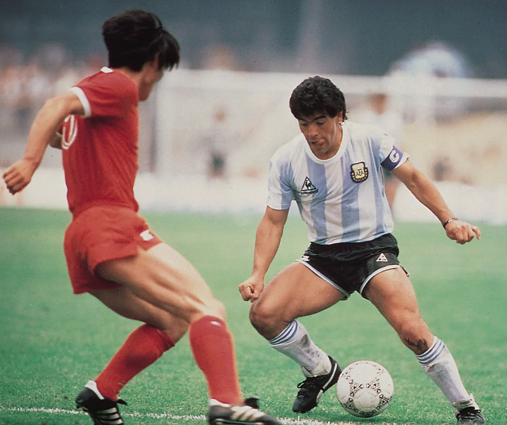
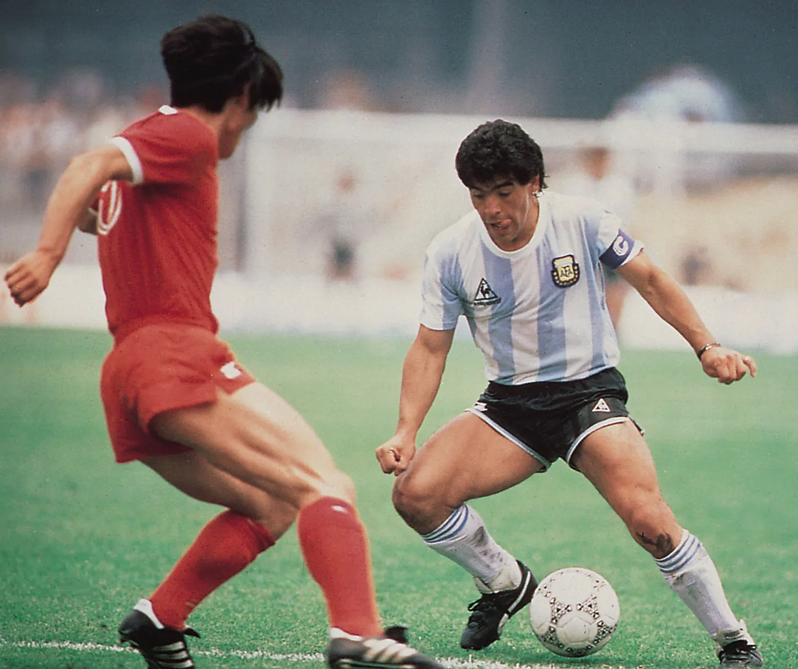

Diego Maradona
The best football player in tha world
Maradona Timeline
- 1960 Maradona is born
- 1971 Scouted age 11 for the junior team of Argentinos Juniors
- 1976 Makes his professional debut aged 15
- 1977 Makes his full international debut for Argentina aged just 16
- 1979 Scores first international goal and wins the junior World Cup
- 1981 Transfers to Boca Juniors for $1.96m.
- 1982 Plays his first World Cup for Argentina, scoring twice, but also getting sent off. Afterwards he is transferred to Barcelona FC for a then world record $9.81m.
- 1983 Wins the Spanish Cup with Barcelona
- 1984 Transfers from Barcelona to Serie A Napoli for another record fee of $13.54m.
- 1986 Captains Argentina to World Cup Victory, scoring two goals against England on the way, the first, the infamous "Hand of God" and the second an incredible 50 meter run voted "Goal of the Century" in a 2002 FIFA poll.
- 1987 Helps Napoli to their first Italian title
- 1990 Hit by paternity suit after World Cup final defeat by West Germany
- 1991 Fails a drugs test and is banned for 15 months. Leaves Italy in disgrace.
- 1992 Makes his comeback at Sevilla in Spain
- 1993 Heads back to Argentina with Newell's Old Boys after disagreement with Sevilla
- 1994 Sent home after failing drugs test at the World Cup in the U.S.A.
- 1996 Books into a clinic for drug addiction.
- 1997 Announces retirement from football aged 37 after failing another drugs test
- 2000 Collapses with heart problems
- 2002 Moves to Cuba to try and combat drug addiction
- 2004 Rushed to hospital after another collapse
- 2005 Maradona hosts his own talk show, interviewing Pele on the opening night
- 2008 Emir Kusturica's documentary "Maradona" is shown at the Cannes Film festival
- 2010 He coach the Argentina selection.
- 2020 He died in 25th of November. He died because he had a hearth failure.
"When people succeed, it is because of hard work. Luck has nothing to do with success."
-Diego Maradona
Photo Gallery

"The hand of God" was a handling goal scored by Argentine footballer Diego Maradona during the Argentina v England quarter finals match of the 1986 FIFA World Cup. The goal was illegal under association football rules because Maradona used his hand to score, but because the referees did not have a clear view of the play it stood to give Argentina a 1–0 lead.
In the same match where he scored the Hand of God, Maradona scored what is widely considered as the greatest goal ever, showing an individual ability to carve up England's defense in a breathtaking moment.
"At the World Cup where I was the coach (of Argentina), I took charge of the best version of Messi. I'll tell everyone that. He was incredible. After training had finished, we stayed behind to practice shooting. That's when he started taking more shots at goal. Not because I showed him how to! I only said: 'You need to hit it into the middle'," he added whilst laughing. "Now he scores all the time!", said Maradona in a press conference.

La Noche del 10 was an Argentine television show hosted by football player Diego Maradona, which aired for one season in 2005. In this picture, Maradona gave himself an interview in which he talked about his life.
More photos with Diego Maradona
 



If you want to read more about Diego Maradona, you shold check his Wikipedia page where you can find everything about his career in detail.